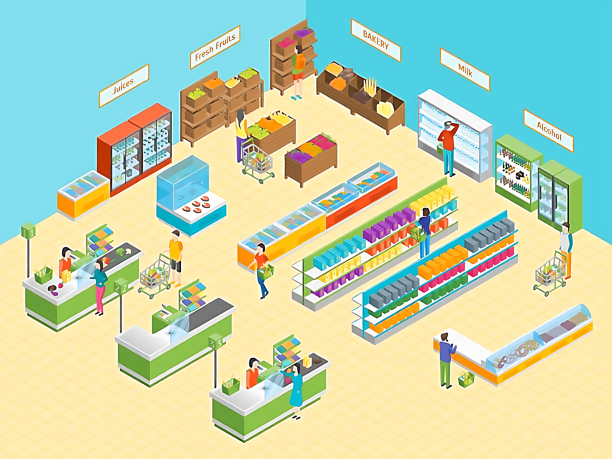

<!DOCTYPE html>
<html>

<head>
    <title>Image Navigator</title>
    <style>
        body {
            margin: 0;
            overflow: hidden;
        }

        #image-container {
            position: absolute;
            top: 0;
            left: 0;
            width: 100vw;
            height: 100vh;
            display: flex;
            justify-content: center;
            align-items: center;
            overflow: hidden;
        }

        #image {
            max-width: 100%;
            max-height: 100%;
            object-fit: contain;
            transform-origin: top left;
        }
    </style>
</head>

<body>
    <!--
    <div id="image-container">
        
    </div>-->


    <script>
        function addMarkerToImage(path, points, color, size, fontSize) {
            const image = new Image();
            image.onload = function () {
                const canvas = document.createElement('canvas');
                canvas.width = image.width;
                canvas.height = image.height;
                const context = canvas.getContext('2d');

                context.drawImage(image, 0, 0);

                for (const p of points) {
                    addMarker(context, p, color, size, '', [0, 0], fontSize);
                }

                const imageDataURL = canvas.toDataURL('image/png');

                const imgElement = document.createElement('img');
                imgElement.src = imageDataURL;

                document.body.appendChild(imgElement);
            };

            image.src = path;
        }

        function addMarker(context, position, color, size, text, textPos, fontSize) {
            const [markerX, markerY] = position;
            const [textX, textY] = textPos;

            context.font = `${fontSize}px Arial`;
            context.fillStyle = 'white';
            context.fillText(text, textX, textY);

            const { width, height } = context.canvas;
            const markerRadius = size * Math.min(width, height);
            const markerCenterX = markerX * width;
            const markerCenterY = markerY * height;
            const markerStartAngle = Math.PI;
            const markerEndAngle = 0;

            context.beginPath();
            context.arc(markerCenterX, markerCenterY, markerRadius, markerStartAngle, markerEndAngle);
            context.fillStyle = color;
            context.fill();

            const triangleSize = size * Math.min(width, height);

            context.beginPath();
            context.moveTo(markerCenterX, markerCenterY + triangleSize * 2);
            context.lineTo(markerCenterX - triangleSize, markerCenterY);
            context.lineTo(markerCenterX + triangleSize, markerCenterY);
            context.closePath();
            context.fillStyle = color;
            context.fill();
        }

        // Example usage
        const imagePath = '../json/stores/Lidl, Nuernberger Str., Altdorf bei Nuernberg.png';
        const markerPoints = [[0.5, 0.5], [0.3, 0.7], [1, 1], [0.8, 0.2]];
        const markerColor = '#FF0000';
        const markerSize = 0.02;
        const markerFontSize = 18;

        addMarkerToImage(imagePath, markerPoints, markerColor, markerSize, markerFontSize);
    </script>

</body>

</html>